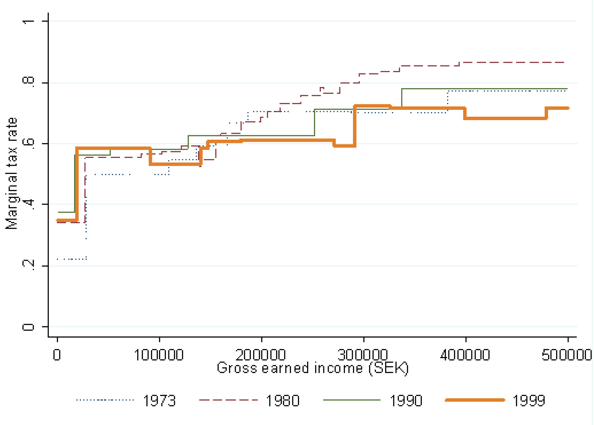

pie title gross disposable income by population decile "1st" : 5490 "2nd" : 16724 "3rd" : 22296 "4th" : 27698 "5th" : 34577 "6th" : 41571 "7th" : 48815 "8th" : 56555 "9th" : 67701 "10th" : 118185
Public Economics
BSc Course
Wednesday, March 4, 2026
Inequality Aversion Illustrated
\(E\): given distribution of incomes (endowment)
\(Y_\mu\): distribution of incomes with same expected value
\(y_{ede}\): equally distributed equivalent income
inequality premium \(\pi = \mu - y_{ede}\)

Link SWF and Welfare Indices
compare two income distributions \({\cal A}\) and \({\cal B}\) with \(\mu_{\cal A}=\mu_{\cal B}\), for which \(\Lambda({\cal A}) > \Lambda({\cal B})\)
then, if Lorenz curves do not cross, \({\cal A}\) has higher welfare than \({\cal B}\) under every symmetric and concave SWF
need not know SWF to say that social welfare is higher under \({\cal A}\)
conversely, if Lorenz curves do cross, different rankings can be obtained
need to know SWF to say whether social welfare is higher under \({\cal A}\) or under \({\cal B}\)
income-based SWF: marginal social welfare weight \(\omega_i = \partial W/\partial v^i\cdot\partial v^i/\partial y_i\) will be rewritten \[\frac{\partial W}{\partial y_i}\]
for \(y_1<y_2\), have \[\frac{\partial W}{\partial y_1}\ge \frac{\partial W}{\partial y_2}\] i.e., a dollar extra for the poor counts more, because \(W\) is assumed concave in incomes
transfer of 1$ from rich to poor, makes society better off, \(W\uparrow\)

- index \[\mbox{Atkinson}_\varepsilon = 1 - \frac{y_{ede}}{\mu}\]
- SWF \[W_{Atkinson}(y_1,\ldots,y_N)=\sum_i\frac{y_i^{1-\varepsilon}}{{1-\varepsilon}}\]
- \(\varepsilon\) degree of inequality aversion
Poverty Relief Measures and Consumer Choice
- transfers are used to address poverty to targeted and identified individuals
- in cash or in kind
- cash transfers can be used to
- move individuals back to the poverty line in terms of disposable income
- e.g., in inflationary periods
- counteract a price hike on specific goods
- e.g., using the idea of compensating variation
- move individuals back to the poverty line in terms of disposable income
- in-kind transfers for particular expenditure categories (necessitities)
- e.g., social/council housing; food stamps/coupons/special debit cards; reduced public transport fares; access to health services
- in-kind transfers reduce the choice set

- in-kind benefit is tied to consumption of good \(x_1\)
- it cannot be (directly) exchanged for good \(x_2\)
- there is a kink at \(E_2\) on the red BC
- individual might choose to consume at the kink
- cash benefit is fully fungible (grey BC), there is no kink, and it might afford higher utility at \(E_3\)
Layered Welfare Programs and Implicit Taxes
- Integrated welfare systems
- tax labor income (possibly progressively) and
- pay targeted, conditional, or means-tested benefits in different types of layered programs
- means tests and program qualification thresholds may have recipients fall out of a program altogether
- can imply implicit marginal tax rates of \(\gg 100\%\)
- additional complexity arises out of multitude of programs at different levels of government (e.g. municipalities, states, central gov’t) leading to fragmentation, intransparency, overlap and coverage gaps, with bureaucracy and stigma leading to discouragement (incomplete take-up)

source: Maag et al., Nat. Tax Jrnl., 2012

source: Liang, J Pub Ec, 2012

source: CPB (2015)
Summary
- Lorenz curve and Gini coefficient as standard statistical tools to quantify inequality
- there are many others adhering to Pigou Dalton principle (e.g. Theil or Atkinson)
- in practice, top-1% share or 90/10 ratio are popular
- redistribution is welfare-enhancing under a convex SWF, and can be achieved using a simple budget-neutral tax-benefit system (assuming no behavioral response)
- to some degree, there is a link between inequality and SWF
- poverty measurements are often tied to distributional aspects (relative poverty)
- poverty policy aims at providing a consumption floor + in-kind provision: targeting and self-selection of the needy + benefit design can dis-/encourage labor supply (participation)